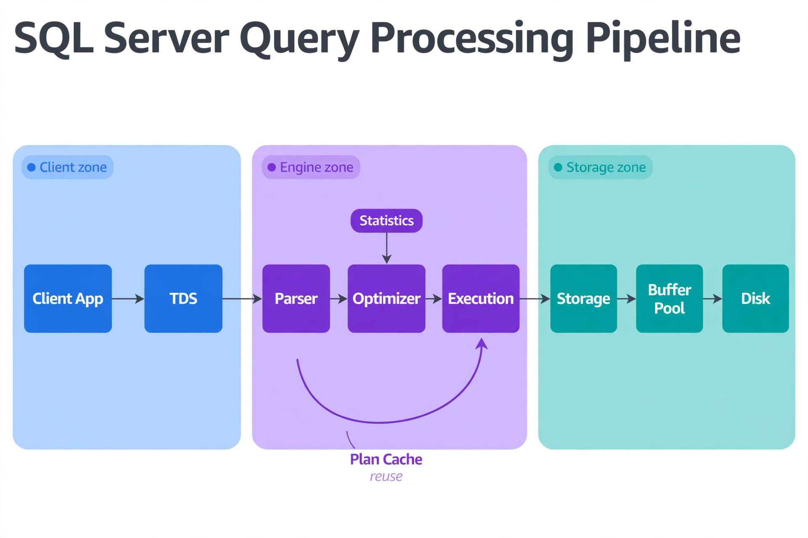

Chapter 3: System Architecture Overview
Understanding how a database engine works internally is not an academic exercise — it is the foundation of everything a DBA does. When you tune a slow query, diagnose a memory problem, or plan for high availability, you are reasoning about the internal components of the database system. This chapter walks through the architecture of SQL Server, covering how the engine receives queries, processes them, manages memory, writes data to disk, and handles concurrency. By the end, you will see the system clearly enough to know exactly which internal component to investigate when something goes wrong in production.
---
How the Engine Receives and Processes a Query
Every database interaction begins the same way: a client sends a request, and the engine has to figure out what the client wants, whether it is valid, what the most efficient execution plan looks like, and how to return a result. The path a query takes through the engine — from raw text to result rows — is called the query processing pipeline, and understanding it gives you a mental model for diagnosing almost any performance problem.
In SQL Server, everything runs inside a single service process (sqlservr.exe), scheduled by a user-mode operating system layer called SQLOS. When a client connects — typically over the TDS (Tabular Data Stream) protocol on port 1433 — SQLOS assigns the connection to a scheduler (one per logical CPU) and lends it a worker thread from the thread pool. This thread-pool model means a thousand idle connections cost far less than a thousand OS processes would, but it also means worker-thread exhaustion is a real failure mode: when all workers are busy, new requests queue behind the THREADPOOL wait, and the instance stops accepting work even though CPU looks idle.
The query text then travels a pipeline with four stages. The parser checks syntax and builds a parse tree. The algebrizer (also called the binder) resolves every object name, column reference, and data type against the system catalog, producing a logical operator tree. The query optimizer — a cost-based Cascades-framework optimizer — explores equivalent plan shapes (join orders, join algorithms, access methods), estimates each candidate's cost using statistics from sys.stats and cardinality estimation, and picks the cheapest. Finally, the execution engine runs the chosen plan and streams rows back to the client.
In SQL Server, the equivalent process runs inside a single, monolithic service (sqlservr.exe) using a thread pool model rather than separate OS processes. When a client connects via TDS (Tabular Data Stream protocol), a worker thread is assigned. The query text goes through the parser, which produces a parse tree, then into the algebrizer, which resolves object names and data types. The result is a query tree passed to the query optimizer, which generates and evaluates execution plans using statistics from sys.stats. A compiled plan is stored in the plan cache. On subsequent executions of the same parameterized query, the engine reuses the cached plan instead of recompiling — which is why the very first execution of a query (compile time included) is often slower than every execution after it.
A key practical characteristic of the engine: SQL Server caches execution plans aggressively, which makes plan cache management a core DBA responsibility. Ad-hoc workloads can bloat the cache with thousands of single-use plans — the optimize for ad hoc workloads setting stores only a plan stub on first execution and the full plan on second use. And cached plans have a dark side: parameter sniffing, where a plan optimized for one parameter value performs terribly for another, is one of the most common sources of "the query was fast yesterday" incidents. Query Store, covered later in this book, is the flight recorder that lets you prove it.

The diagram is organized into three zones: the blue Client zone (application and TDS protocol), the purple Engine zone (parser, optimizer, and execution), and the teal Storage zone (storage engine, buffer pool, disk). Arrows show the left-to-right flow of a query, with statistics feeding down into the optimizer and a curved ‘Plan Cache reuse’ loop bypassing compilation for repeated queries. The operational takeaway: most performance problems live at the boundaries between zones — worker-thread exhaustion in the client zone, bad plans from stale statistics in the engine zone, and buffer-pool pressure in the storage zone.
You can observe the query pipeline directly using system tools. To see active queries currently running through the execution engine:
-- Show active queries with wait type and elapsed time
SELECT
r.session_id,
r.status,
r.wait_type,
r.wait_time,
r.elapsed_time / 1000.0 AS elapsed_seconds,
r.cpu_time,
r.logical_reads,
t.text AS query_text
FROM sys.dm_exec_requests r
CROSS APPLY sys.dm_exec_sql_text(r.sql_handle) t
WHERE r.session_id > 50 -- filter out system sessions
ORDER BY r.elapsed_time DESC;---
Memory Architecture: Where Data Lives Before It Hits Disk
Memory management is one of the most consequential aspects of database architecture. A database engine that reads every row from disk on every query would be unusably slow. The entire purpose of memory management in a DBMS is to keep frequently accessed data in RAM, serve reads from memory rather than disk, and stage writes in memory before flushing them to durable storage efficiently.
SQL Server manages memory as a unified pool governed by SQLOS's memory manager, bounded above by the max server memory setting. Within that pool, memory is tracked by memory clerks — accounting components per subsystem (Buffer Pool, plan cache, connection memory, CLR) that you can inspect through sys.dm_os_memory_clerks when you need to find who is consuming RAM.
The most important component is the Buffer Pool, controlled by the max server memory configuration. The Buffer Pool holds copies of 8KB data and index pages read from disk, plus cached execution plans. When a query needs a page, the engine first checks the Buffer Pool: a hit serves the page from RAM, a miss triggers a physical read and the page is cached for next time. The health metric that matters here is Page Life Expectancy (PLE) — how long a page survives in the pool before eviction. A PLE that collapses under load means your working set no longer fits in memory, and no amount of query tuning will fix a memory-bound workload.
SQL Server manages its cache directly rather than leaning on the operating system's file cache for data files, which makes its memory behavior predictable and controllable: max server memory is a genuine ceiling, not a suggestion. The one critical OS-level interaction to configure is Lock Pages in Memory — the Windows privilege that lets SQL Server lock its buffer pool in physical RAM so the OS never pages it to disk. Without it, Windows can page out buffer pool memory under pressure, producing the worst of both worlds: slow queries and an engine that believes it has memory it cannot actually touch.
Beyond the Buffer Pool, queries need workspace memory for sorts, hash joins, and hash aggregations. The optimizer requests a memory grant before execution; if the grant is too small, the operation spills to tempdb and the query slows dramatically, and if too many queries wait for grants simultaneously you will see RESOURCE_SEMAPHORE waits — the signature of memory pressure at the query level. Memory grants that are wildly oversized are just as bad: they waste RAM and serialize concurrent queries. Sort and hash warnings in your monitoring are the smoke; grant sizing and tempdb throughput are the fire.
The Buffer Manager is the component that owns the Buffer Pool. It tracks every cached page's state, ages pages out under memory pressure using a clock algorithm, and coordinates with the Lazy Writer thread that keeps free buffers available. The Buffer Pool contains data pages (8KB), index pages, and execution context memory, and SQL Server dynamically balances these consumers against each other — plan cache bloat can starve data pages, which is one more reason ad-hoc plan cache hygiene matters.
SQL Server also maintains a separate procedure cache (plan cache) within the Buffer Pool for compiled execution plans, and a log cache for transaction log records before they are flushed to disk.
A second important SQL Server memory area is In-Memory OLTP (formerly Hekaton), introduced in SQL Server 2014. This subsystem manages memory-optimized tables entirely outside the Buffer Pool, in a separate region, using lock-free data structures. This is a fundamentally different architecture from the standard row-store engine.
One thing every DBA should be able to do is quickly assess memory pressure. The following queries help identify whether the buffer pool is under strain:
-- Check buffer pool hit ratio via DMV
SELECT
physical_memory_in_use_kb / 1024.0 AS memory_used_mb,
page_fault_count,
memory_utilization_percentage
FROM sys.dm_os_process_memory;
-- Also check buffer cache hit ratio via performance counters
SELECT
object_name,
counter_name,
cntr_value
FROM sys.dm_os_performance_counters
WHERE counter_name = 'Buffer cache hit ratio'
OR counter_name = 'Buffer cache hit ratio base';---
Storage Architecture: How Data Is Organized on Disk
Understanding physical storage organization helps you make decisions about tablespace placement, file layout, I/O tuning, and capacity planning. It also explains why certain operations — like sequential scans versus random I/O — have the performance characteristics they do.
In SQL Server, every database is a set of operating-system files: one primary data file (.mdf), zero or more secondary data files (.ndf), and one or more transaction log files (.ldf). Files are organized into filegroups — allocation containers that decide which physical files an object lives on. Every database has a PRIMARY filegroup holding system objects; best practice is to create dedicated filegroups for user data and indexes so growth, placement, and piecemeal restores can be managed independently. SQL Server fills files within a filegroup proportionally, striping new allocations across all files — which is why adding a second data file to a filegroup genuinely increases write throughput.
The fundamental storage unit is the page: 8KB, always. Every data file is a sequence of pages, each with a 96-byte header, the data rows themselves, and a row-offset array (slot array) at the end of the page that locates each row. This layout is why a heap row is addressed by its RID — file ID, page ID, and slot number — and why page splits hurt: when an insert lands on a full page, the engine allocates a new page and moves half the rows, an operation that fragments the index and generates log records proportional to the data moved.
Filegroups are also the mechanism for tiered storage: place hot indexes on NVMe-backed files and cold archive tables on slower, cheaper disks by creating the objects on different filegroups. Partitioned tables take this further — each partition can live on its own filegroup, so sliding-window partition maintenance can drop a month of data as a metadata operation instead of a logged delete of a billion rows.
The transaction log is stored separately in the database's .ldf file. Every change to data pages is first written as a log record before the data page itself is modified on disk. This is the mechanism that guarantees durability — if the system crashes after a log record is written but before the data page is flushed, SQL Server replays the log during recovery to reconstruct the change. Internally the log is divided into virtual log files (VLFs); too many tiny VLFs (from growing the log in small increments) slows recovery and replication, which is why log files should be sized deliberately and grown in large, infrequent chunks.
SQL Server organizes storage around database files. A database consists of at least one data file (.mdf, the primary data file) and one transaction log file (.ldf). Additional data files can be added (.ndf, secondary data files), and data files can be grouped into filegroups to control where objects land. The default filegroup is PRIMARY; DBAs typically create additional filegroups for large tables, read-only data, or in-memory tables.
The fundamental storage unit in SQL Server is also an 8KB page. Pages are grouped into extents (8 contiguous pages = 64KB). A newly created small table begins with a mixed extent (shared with other objects), but once it grows past eight pages, it transitions to a uniform extent (dedicated to a single object). This extent management is tracked in system pages called IAM pages (Index Allocation Map), GAM (Global Allocation Map), and SGAM (Shared Global Allocation Map).
The transaction log is the heart of SQL Server's durability story. Every database has a transaction log that records all changes before they are applied to data pages. Log records are written sequentially and chained by log sequence numbers (LSNs), which also order crash recovery, log shipping, and Availability Group redo. The log is truncated — its inactive portion marked reusable — only by log backups (in the FULL and BULK_LOGGED recovery models), which is why a database with no log backups will grow its log file until the disk fills and every write in the database stops.
SQL Server stores a table either as a heap (when no clustered index exists) or as a clustered index, where the table's row data is physically ordered by the clustered key and stored within the B-tree structure itself. Most production tables are clustered indexes, making the clustering-key choice a design decision with major performance implications. The ideal key is narrow, static, unique, and ever-increasing — an IDENTITY column or sequence — because it appends new rows at the logical end instead of splitting pages in the middle. A random GUID or frequently-updated wide key does the opposite: it fragments the table, and because every nonclustered index stores the clustering key as its row locator, a wide clustering key bloats every index on the table. Heaps have legitimate uses — staging tables and high-insert ETL landings — but updates that relocate rows leave forwarding pointers behind, so heaps need periodic rebuilds too.
---
Concurrency Control: Transactions, Locking, and MVCC
A production database is never accessed by just one session at a time. Dozens, hundreds, or thousands of concurrent transactions may be reading and modifying data simultaneously. Concurrency control is the mechanism that keeps these transactions from interfering with each other in ways that produce incorrect results. SQL Server delivers the full ACID properties, and its concurrency story centers on locking — with row-versioning options for workloads where blocking is unacceptable. Understanding the lock manager is non-optional: most "the database is slow" incidents are, at their root, concurrency incidents.
SQL Server uses locking as its primary isolation mechanism. Locks form a hierarchy — database, table, page, row/key — and come in modes that compose: shared (S) locks for reads, exclusive (X) locks for writes, update (U) locks as a pre-write probe, and intent locks (IS, IX) at coarser granularities announcing what is happening below. Two transactions conflict when one holds a lock mode incompatible with what the other requests, and the loser waits — this is blocking, the single most common cause of "slow database" complaints. When waiting forms a cycle, the engine picks a deadlock victim and rolls it back with error 1205. Your job is not to eliminate locking — it is to keep transactions short, access objects in consistent order, and choose an isolation level whose guarantees match what the business actually needs.
Lock granularity is the engine's cost-control mechanism: it starts with row or key locks and escalates to page or table locks when a single statement acquires more than roughly 5,000 locks on one object. Escalation trades memory for blocking surface — it is the reason a big unbatched UPDATE can suddenly block the entire table instead of just the rows it touches. The fix is batching: process large modifications in controlled chunks (a few thousand rows per batch) so no single statement trips the escalation threshold.
Cleanup is an architectural necessity, not an optional chore. Deleted rows leave behind ghost records — the space is not reclaimed until the ghost cleanup task sweeps them, which is why index rebuilds and reorganizes remain routine maintenance rather than occasional emergencies. And when row versioning is enabled, superseded row versions accumulate in tempdb's version store until no active transaction still needs them — so a single long-running transaction pins version-store growth and can bloat tempdb for the whole instance.
SQL Server offers a different model. By default (without enabling snapshot isolation), SQL Server uses a pessimistic locking approach: read operations acquire shared locks, write operations acquire exclusive locks, and these locks are held for varying durations depending on the isolation level. Under READ COMMITTED (the default), shared locks are acquired and released row by row during a scan, which can lead to readers blocking on writers and vice versa.
SQL Server also offers an MVCC-style option called Read Committed Snapshot Isolation (RCSI). When enabled at the database level, SQL Server stores row versions in a special area of tempdb called the version store. Readers no longer acquire shared locks and are not blocked by writers — each statement sees a consistent snapshot of committed data as of the statement's start. Enabling RCSI is one of the most impactful configuration changes you can make to a busy SQL Server OLTP database, and most modern OLTP deployments should have it enabled — after sizing tempdb for the version-store load it creates.
SQL Server also offers Snapshot Isolation (SI), which gives each transaction a consistent snapshot of the entire database as of the start of the transaction (as opposed to RCSI, which provides a statement-level snapshot). This is the right choice when a multi-statement transaction must see stable data throughout — end-of-day reporting batches, for example — at the cost of update conflicts (error 3960) when two snapshot transactions modify the same row.
Both databases support explicit locking, and both are susceptible to deadlocks — situations where two transactions each hold a lock that the other needs. Both engines detect and automatically resolve deadlocks by killing one of the involved transactions (the victim). Deadlock information is invaluable for debugging:
-- Find current blocking chains
SELECT
blocking_session_id,
session_id,
wait_type,
wait_time,
wait_resource,
t.text AS query_text
FROM sys.dm_exec_requests r
CROSS APPLY sys.dm_exec_sql_text(r.sql_handle) t
WHERE blocking_session_id > 0;---
Background Processes and Maintenance Workers
A running SQL Server instance is not just the sum of its client connections. The engine maintains dedicated background threads that handle checkpointing, lazy writing, ghost cleanup, and log flushing continuously. Understanding these threads helps you diagnose unexpected CPU or I/O spikes and understand what the database is doing when no client queries are running.
SQL Server's background work runs as threads inside the engine, scheduled by SQLOS alongside user worker threads. The ones you will encounter in production:
The Lazy Writer continuously scans the Buffer Pool for clean, aged-out pages to keep free buffers available. When it cannot keep up — the pool is full of dirty pages nobody is flushing — queries stall waiting for free buffers, and you will see it in the waits. The Ghost Cleanup task reclaims space from deleted rows in the background. And Automatic Tuning watches Query Store for plan regressions and can force the last known good plan on its own. None of these are optional overhead; they are the engine's self-maintenance, and their distress signals show up in your monitoring before users notice.
The Log Writer flushes the log buffer to the transaction log — on every commit, and whenever the buffer fills. Log flush latency is the floor under your transaction latency: slow log storage shows up directly as WRITELOG waits, the canonical signature of a log bottleneck. The Checkpoint process periodically writes all dirty pages in the Buffer Pool to disk, bounding how much log must be replayed after a crash. SQL Server performs automatic checkpoints, indirect checkpoints (which bound recovery time per database and are the default since 2016), and manual checkpoints via the CHECKPOINT command.
Statistics maintenance has no dedicated background thread — it is driven by the optimizer itself. Auto-update statistics fires when a query's compilation detects that a table's modifications have crossed the refresh threshold, and with AUTO_UPDATE_STATISTICS_ASYNC enabled the current query proceeds on the old statistics while the refresh happens in the background. That single setting is the difference between one slow query and every query stalling on stats updates during a bulk load.
SQL Server has an analogous set of internal threads:
The Lazy Writer scans the Buffer Pool for pages that have not been recently accessed and writes dirty ones to disk, then frees the buffer frames for reuse. This is the mechanism that prevents the Buffer Pool from running out of free pages. It is triggered when free buffer availability drops below a threshold.
The legacy recovery interval setting still bounds crash recovery at the instance level, but per-database indirect checkpoints (via TARGET_RECOVERY_TIME) are the modern control: they make recovery time predictable per database instead of per instance. A manual CHECKPOINT before maintenance windows and bulk operations is still good hygiene — it empties the dirty-page backlog so the work that follows starts from a clean, known point.
The Log Writer (or log flush thread) ensures that log records in the log cache are written to the transaction log file on disk before a transaction is confirmed as committed. This is the mechanism behind SQL Server's durability guarantee.
The ghost cleanup thread removes index entries for deleted rows that were marked as ghost records rather than removed immediately. Ghost records are why a table can report more pages than its live rows justify — and why index rebuilds remain routine maintenance rather than occasional emergencies.
You can observe what the engine's background threads are doing at any moment:
-- Identify internal SQL Server system tasks and background workers
SELECT
session_id,
status,
command,
wait_type,
wait_time,
blocking_session_id,
open_transaction_count
FROM sys.dm_exec_requests
WHERE session_id < 50 -- system sessions have low session IDs
ORDER BY session_id;---
How Architecture Shapes Production Decisions
Architecture is not something you read once and file away. Every tuning decision, every capacity plan, every incident response traces back to the architectural principles covered in this chapter. Understanding where the engine is spending time — in the query optimizer, in memory pressure on the buffer pool, in ghost cleanup and version-store growth, in lock contention — is only possible if you understand how those subsystems work and interact.
The thread-pool model handles high connection counts gracefully at the OS level, but it introduces its own class of problems: worker-thread exhaustion (THREADPOOL waits), excessive parallelism governed by MAXDOP and cost threshold settings, and scheduler contention visible as CXPACKET and CXCONSUMER waits. Connection pooling still matters enormously — ADO.NET and SqlClient pool connections client-side, and sp_reset_connection resets session state when a connection is reused — because establishing a fresh connection, authenticating, and allocating session memory is expensive no matter how efficient the thread pool is.
The clustered index as the table design means row locality for the clustering key is maintained automatically, making range queries on the clustering key very efficient — but it also means choosing a poor clustering key (a random GUID, a frequently updated wide column) directly degrades physical storage layout, fragments the table, and bloats every nonclustered index that carries the key as its row locator. Treat clustering-key selection as a physical design decision with permanent consequences, not a logical afterthought.
SQL Server's row versioning stores versions in tempdb when RCSI or Snapshot Isolation is enabled, keeping the primary data pages clean but making tempdb a potential bottleneck. In a heavily write-intensive workload with RCSI enabled, tempdb I/O latency and version-store growth become primary monitoring targets — and a single long-running transaction can pin versions in the store for hours, so tracking oldest-active-transaction age is as important as tracking the store's size.
The transaction log is the basis not just for crash recovery but for the entire high-availability story: log shipping replays log backups, Always On Availability Groups stream log records to secondaries, transactional replication reads the log for published changes, and point-in-time recovery replays it to an arbitrary moment. Understanding log generation rate, VLF health, and what is preventing log truncation (sys.databases.log_reuse_wait_desc is the single most useful column for "why won't my log shrink") is essential operational knowledge.
None of these are incidental details — they are the load-bearing walls of the engine, and they shape the specific skills and habits that make a DBA effective: watching version-store growth, sizing tempdb, choosing clustering keys deliberately, and keeping the transaction log backed up.
---
Key Takeaways
QueryOptimizer — Self-Hosted SQL Performance Workbench
EXPLAIN visualizer · Index advisor · Slow query dashboard · SQL Server
Test yourself on this chapter
5 questions · instant scoring · explanations included